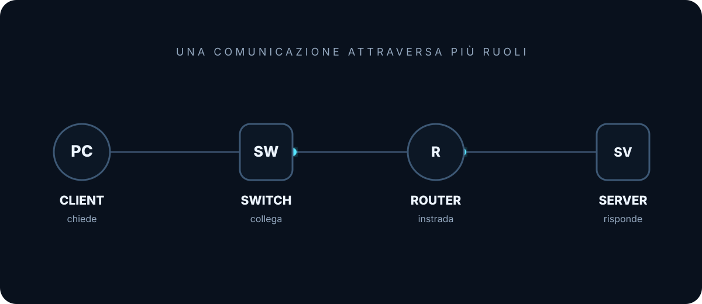
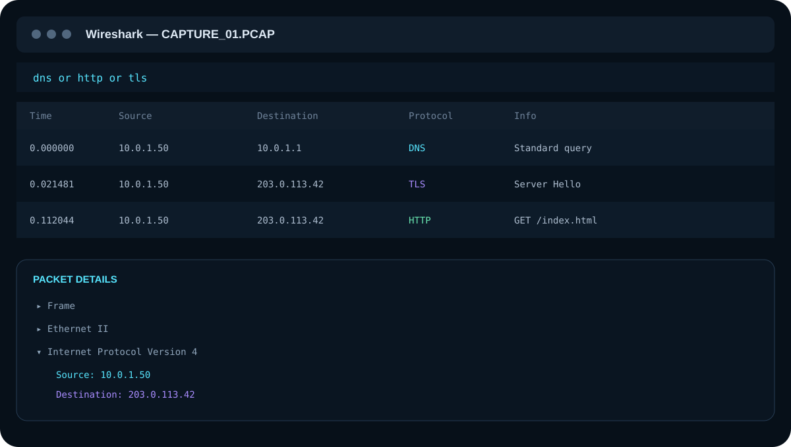

PRIMO PERIODOSISTEMI E RETIGUIDA VISUALE
UNA RETE NON SI VEDE. I SUOI EVENTI SÌ.
Capire la rete.
Vederla accadere.
Un percorso visuale per capire come comunicano i dispositivi, come viaggiano i dati e come leggere una comunicazione reale con Wireshark.
01CONCETTO
02VISUALIZZAZIONE
03ESEMPIO
04ANALISI

PERCORSO DIDATTICO
Dal concetto al tutorial
Non una semplice raccolta di definizioni: ogni pagina collega spiegazione, schema, esempio e strumenti di analisi.
01Componenti della reteClient · Server · Switch · Router
02Indirizzo IPSorgente · destinazione · filtri
03Protocolli e porteRegole · servizi · HTTP · HTTPS
04Il pacchettoIncapsulamento · sequenza · tempo
05Servizi di reteDNS · DHCP · ARP · ACL
06WiresharkCattura · filtri · interpretazione
07Demo PCAP + AnalisiScarica il PCAP · segui l’analisi passo passo

Guardare dentro la comunicazione. Una cattura è una sequenza di eventi: tempo, sorgente, destinazione, protocollo e informazioni diventano leggibili.
COME STUDIARE
Una stessa idea, quattro prospettive
01
Che cosa succede?
La spiegazione introduce il concetto con parole semplici e precise.
02
Come lo vedo?
Gli schemi rendono visibili dispositivi, indirizzi, pacchetti e flussi.
03
Come lo verifico?
Gli esempi collegano la teoria ai dati che puoi osservare davvero.